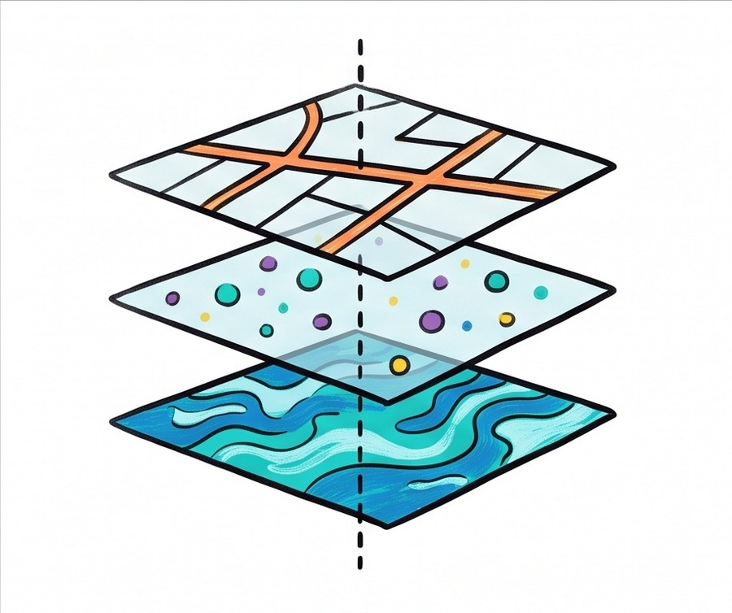

1.2 Geographic Data
- Data comes from organizations and individuals: Governments, companies, and NGOs collect geographic data at large scale. Individuals collect it too, through personal fieldwork and citizen science.
- Geospatial technologies collect and display data: GIS stores and layers spatial data, GPS pinpoints exact locations by satellite, remote sensing gathers data from a distance, and online mapping tools display and share it.
- Not all data comes from sensors: Written and observational sources, field notes, media reports, travel narratives, policy documents, interviews, landscape analysis, and photographs, all provide spatial information too.
Try each question before revealing the answer.
1. What is the difference between geographic data collected by an organization and data collected by an individual?
2. Name the four geospatial technologies discussed in this reading.
3. Give two examples of written or observational sources of spatial information, other than a formal dataset.
- Identify different methods of geographic data collection.
- Explain how geospatial technologies are used to collect and display data.
- Identify written and observational sources of spatial information.
Tap a term for its definition.
-
Definition: Data gathered directly at a location, either by organizations (governments, companies, research institutions) or by individuals conducting their own observations. Significance: The foundation of geographic research; even the most advanced satellite technology is often checked against data gathered on the ground. Example: A national park service surveying wildlife populations, or a hobbyist logging bird sightings in a citizen-science app.
-
Definition: Computer software that captures, stores, analyzes, and displays geographically referenced data in layers, allowing geographers to combine and compare multiple spatial datasets. Significance: The primary modern tool geographers use to build and analyze thematic maps, replacing most hand-drawn map production. Example: A city planning department using GIS to overlay flood zone data, population density, and road networks to decide where to build a new hospital.
-
Definition: A satellite-based navigation system that allows a receiver to determine its precise location on Earth's surface using signals from multiple orbiting satellites. Significance: Provides the precise location data that underlies most modern mapping, from smartphone navigation apps to scientific field research. Example: A biologist using a handheld GPS unit to record the exact coordinates where an endangered species was spotted.
-
Definition: The collection of data about the Earth's surface from a distance, typically using satellites or aircraft equipped with cameras or sensors, without physical contact with the area being studied. Significance: Allows geographers to gather data over huge, difficult-to-access, or even hazardous areas quickly and repeatedly over time. Example: Satellite imagery used to track deforestation in the Amazon rainforest year over year.
-
Definition: Web-based tools that display, share, and let users interact with geographic data, often pulling from GIS databases in real time. Significance: Has made geospatial data accessible to the public, not just professional geographers, and is now how most people actually encounter maps. Example: A live online map showing real-time traffic conditions or the current spread of a wildfire.
-
Definition: Drawing spatial conclusions from the visible features of a landscape itself, without a formal survey or dataset. Significance: One of several written and observational sources geographers use alongside formal data collection. Example: Noticing terraced hillsides and inferring that a region relies on sloped-land agriculture.
Who Collects Geographic Data
Before geographers can make a map, they need data, and that data has to come from somewhere. Field data can be gathered by organizations: government agencies running a national census, companies researching where to open a new store, universities studying migration patterns. It can also be gathered by individuals: a hiker logging trail conditions, a birdwatcher reporting a rare sighting to a citizen-science app, a student mapping potholes in their own neighborhood. Both scales matter. Large organizations can collect data across huge areas, while individuals can capture fine-grained detail an organization might never notice.
Geospatial Technologies
Modern geography relies on a set of major technologies for collecting and managing spatial data. A Geographic Information System, or GIS, is software that stores spatial data in layers, roads in one, population density in another, flood zones in a third, and lets a geographer combine and compare them. A city planning department deciding where to build a hospital might use GIS to overlay population density, existing hospitals, and travel time by road, all at once, to find the best location.

GPS, the Global Positioning System, uses orbiting satellites to let any receiver, a phone, a car, a handheld unit, find its exact location on Earth. GPS is why a smartphone can guide you turn by turn to a destination, and it is also a basic field research tool: a biologist recording wildlife sightings or a geologist marking sample sites both depend on it.
Remote sensing takes a different approach: collecting data about the Earth's surface from a distance, using satellites or aircraft with cameras and sensors, without touching the location being studied. It lets geographers monitor huge or hard-to-reach areas again and again over time. No research team could survey the entire Amazon rainforest every year on foot, but a satellite can photograph the same region on a schedule, letting researchers compare images and measure exactly how much forest has been lost.
Finally, online mapping and visualization tools take all of this collected data and make it accessible. A live traffic map, an interactive census dashboard, or a public GIS portal a city posts online all let ordinary people explore geographic data that used to require specialized software and training.
Written and Observational Sources
Not all spatial information comes from a sensor or a satellite. Geographers also draw on written and observational sources: field observations made firsthand at a location, media reports covering an event or place, travel narratives describing a journey, policy documents outlining government plans for a region, personal interviews with residents, landscape analysis (drawing conclusions from the visible features of a place, like terraced hillsides suggesting sloped-land farming), and photographic interpretation (reading spatial clues out of a photograph, old or new).
These sources often capture context that a dataset alone cannot: not just what is happening in a place, but why, or what it feels like to live there. A historian studying a 19th-century migration might rely on travel narratives and letters home. A geographer studying a current housing crisis might combine census data with resident interviews to understand both the numbers and the lived experience behind them.
These videos will help you review Geographic Data and solidify key concepts before your exam.
- data collected only by remote sensing
- data collected by both an organization and an individual
- a single written and observational source
- the Modifiable Areal Unit Problem
- a reference map
- GPS
- a Geographic Information System (GIS)
- a travel narrative
- A personal interview
- Remote sensing via satellite imagery
- A handheld GPS unit alone
- A policy document
- remote sensing data
- a geospatial technology
- a written and observational source
- GPS data
- remote sensing
- online mapping alone
- GPS
- landscape analysis
Respond to parts A, B, C, and D. Use complete sentences.
A
Describe one way geographic data is collected by an organization and one way it is collected by an individual.
B
Explain how GPS data differs from remote-sensing data.
C
Explain why a geographer would use GIS after collecting spatial data.
D
Identify two written or observational sources of spatial information besides a formal dataset.
Respond to parts A, B, C, and D.
A
Identify which source in the list is an example of remote sensing.
B
Identify which source in the list is an example of GPS use.
C
Explain how the newspaper archive and resident interviews function as written and observational sources.
D
Explain one reason a researcher would want to use all four of these sources together rather than just one.